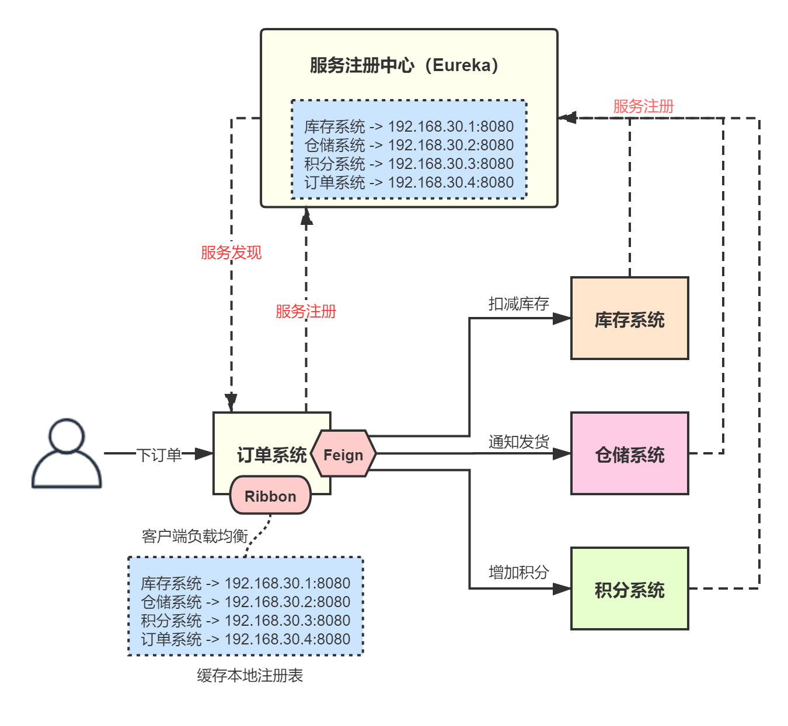
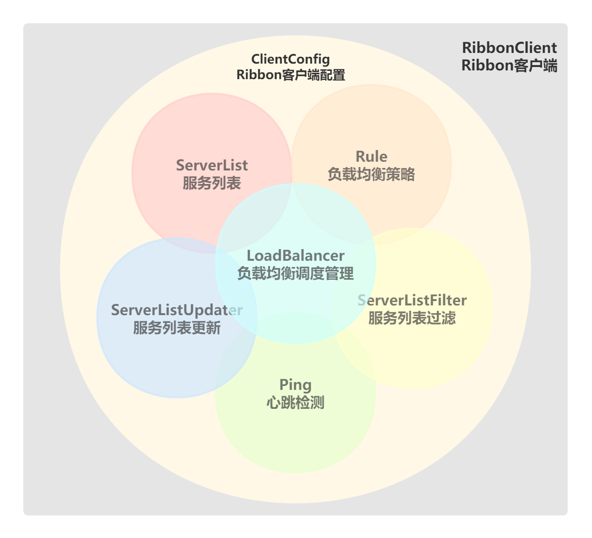

从本章开始，我将讲解Spring Cloud Netfilx中的另一个核心组件——Ribbon。Spring Cloud Netfilx提供了Ribbon作为客户端负载均衡组件，Ribbon本身很简单，所以我讲解的重点是Spring Cloud是如何将Netflix Ribbon集成到自己的技术体系中的。
网上有很多文章讲Ribbon、Ribbon源码解析、讲Spring Cloud怎么与Ribbon整合....balablabla，在我看来都几乎没有几篇能够将原生Netflix Ribbon、Spring Cloud Netflix Ribbon以及Spring Cloud 整合Netflix Ribbon的机制讲明白，导致很多童鞋，看得云里雾里，根本搞不清楚它们之间的关系，只知道Spring Cloud把Netflix Ribbon封装了一层而已。
这里我也插一句题外话，任何知识的学习最忌浮躁，而浮躁恰恰又是现在天朝互联网的通病，看看现在各种乱七八糟的技术公众号、培训课程就知道了，市面上除了个别几个人的课程和博客文章在我看来有价值外，其余都是CtrlCV，毫无价值和深度的。
在分布式系统中，如果某个子系统部署了多个服务实例，那也会在注册中心注册多个相同的服务。比如我们有一个订单系统作为服务消费方，那可能从注册表拉取到多个库存服务，此时订单系统就需要选择其中一个服务节点发起调用，这其实就是客户端负载均衡。

可以看到，订单系统作为服务消费方，从注册中心拉取注册表并缓存到本地，接着它就可以从中选择一个服务发起调用。
我们要使用Ribbon，首先必须了解Ribbon的核心组件，我用下面一张图来表述它们：

首先，要使用Ribbon，得有一个RibbonClient，也就是Ribbon客户端。其次RibbonClient需要进行各种配置，所以得有一个负载管理Ribbon客户端配置的组件；最后，RibbonClient仅仅是面向客户端使用的一层封装，Ribbon的真正行为依赖与底层的各种核心功能组件。
我们来看看Ribbon包含哪些核心功能组件。
ILoadBalancer ，负载均衡调度管理器，这是Ribbon最核心的组件，调度并管理Ribbon的其它核心组件，其接口定义如下：
public interface ILoadBalancer {
// 添加应用实例列表
public void addServers(List<Server> newServers);
// 根据负载均衡策略，选择一个应用实例
public Server chooseServer(Object key);
// 标记某个应用实例为下线状态
public void markServerDown(Server server);
// 返回当前可正常服务的应用实例列表
public List<Server> getReachableServers();
// 返回所有应用实例列表
public List<Server> getAllServers();
}
ILoadBalancer的基本使用如下：
// 1.创建一个负载均衡器，这里采用默认实现BaseLoadBalancer
ILoadBalancer balancer = new BaseLoadBalancer();
// 2.设置要调用的各个节点地址
List<Server> servers = new ArrayList<Server>();
servers.add(new Server(“localhost”, 8080));
servers.add(new Server(“localhost”, 8088));
balancer.addServers(servers);
// 3.模拟选择一个Server
for(int i = 0; i < 10; i++) {
Server server = balancer.chooseServer(null);
System.out.println(server);
}
IRule，负载均衡策略，根据一定的算法从一堆Server中选择一个合适的应用实例，其接口定义如下：
public interface IRule{
// 根据负载均衡策略，选择一个合适的服务实例
public Server choose(Object key);
// 设置负载均衡器
public void setLoadBalancer(ILoadBalancer lb);
// 获取负载均衡器
public ILoadBalancer getLoadBalancer();
}
Ribbon提供了很多内置的负载均衡策略：
| 策略名 | 描述 |
|---|---|
| BestAvailableRule | 最大可用策略，即忽略那些连接失败的Server，然后尽量找并发比较低的Server来请求。 |
| AvailabilityFilteringRule | 可用性策略，这个算法会考察Server的可用性：如果Client连续3次请求失败，就会等待30秒后再次访问；如果不断失败，那么等待时间会不断变长；如果某个Server的并发请求太高了，那么会绕过去，不再访问。 |
| WeightedResponseTimeRule | 权重策略，这个算法会给每个Server分配一个权重，权重高的优先访问，如果某个Server响应时间比较长，那么权重就会降低，减少下次访问的概率。 |
| RetryRule | 可重试策略，就是说请求某个Server失败后，会重新找下一个Server发起调用。 |
| RoundRobinRule | 轮询策略，Ribbon的默认负载均衡算法，其实就是经典的Round Robin轮询：从一堆Server List中，不断轮询选择一个server，这样所有请求基本上就会均摊给每个Server。 |
| RandomRule | 随机选择一个server。 |
| ZoneAvoidanceRule | 区域策略，根据区域（机房）进行负载均衡。 |
我们也可以自定义实现：
public class MyRule implements IRule {
private ILoadBalancerr balancer;
public MyRule() {
}
public MyRule(ILoadBalancer balancer) {
this.balancer = balancer;
}
public Server choose(Object key) {
// 这里实现具体的算法策略
List<Server> servers = balancer.getAllServers();
return servers.get(0);
}
//...
}
一般来说，很少需要我们自定义负载均衡算法，除非针对某种业务场景实现请求的hash分发，比如说，根据请求的某些业务参数，分发到指定的机器上去。
IPing，心跳检测，这个组件负责定时检测每一个Server，判断其是否存活，其接口定义如下：
public interface IPing {
// 判断给定的Server是否存活
public boolean isAlive(Server server);
}
基本使用如下：
// 1.创建ILoadBalancer
ILoadBalancer balancer = new BaseLoadBalancer();
// 2.添加Server列表
List<Server> servers = new ArrayList<Server>();
servers.add(new Server(“localhost”, 8080));
servers.add(new Server(“localhost”, 8088));
balancer.addServers(servers);
// 3.添加心跳检测器IPing，每隔1秒检测每个Server
balancer.setPing(new PingUrl());
balancer.setPingInterval(1);
ServerList，服务列表，也就是应用实例列表，其接口如下：
public interface ServerList<T extends Server> {
// 获取初始化的服务列表
public List<T> getInitialListOfServers();
// 获取更新后的服务列表
public List<T> getUpdatedListOfServers();
}
ServerListFilter，服务列表过滤器，其接口如下：
public interface ServerListFilter<T extends Server> {
// 根据一些规则，对传入的应用实例列表进行过滤，返回过滤后的结果
public List<T> getFilteredListOfServers(List<T> servers);
}
ServerListUpdater，服务列表更新器，其接口如下：
public interface ServerListUpdater {
public interface UpdateAction {
// 实现对服务列表的更新操作
void doUpdate();
}
// 启动更新器
void start(UpdateAction updateAction);
// 停止更新器
void stop();
// 返回最近一次更新的时间
String getLastUpdate();
// 返回返回最近一次更新到现在的时间间隔（ms）
long getDurationSinceLastUpdateMs();
// 返回错过的更新周期数
int getNumberMissedCycles();
// 返回核心线程数
int getCoreThreads();
}
Ribbon的配置接口，用于管理Ribbon客户端，以及上述各种核心组件的配置。
Spring Cloud其实只是对Ribbon进行了一层封装，Ribbon完全可以单独使用，所以我们先来看下如何使用原生的Netflix Ribbon进行开发。
首先，假设我开发一个Service Provider应用GreetingService，这就是一个普通的Spring Boot应用，引入POM依赖：
<project xmlns="http://maven.apache.org/POM/4.0.0" xmlns:xsi="http://www.w3.org/2001/XMLSchema-instance"
xsi:schemaLocation="http://maven.apache.org/POM/4.0.0 http://maven.apache.org/xsd/maven-4.0.0.xsd">
<modelVersion>4.0.0</modelVersion>
<groupId>com.tpvlog</groupId>
<artifactId>greeting-service</artifactId>
<version>0.0.1-SNAPSHOT</version>
<packaging>jar</packaging>
<name>greeting-service</name>
<parent>
<groupId>org.springframework.boot</groupId>
<artifactId>spring-boot-starter-parent</artifactId>
<version>2.2.6.RELEASE</version>
</parent>
<properties>
<project.build.sourceEncoding>UTF-8</project.build.sourceEncoding>
</properties>
<dependencies>
<dependency>
<groupId>org.springframework.boot</groupId>
<artifactId>spring-boot-starter</artifactId>
</dependency>
<dependency>
<groupId>org.springframework.boot</groupId>
<artifactId>spring-boot-starter-web</artifactId>
<version>2.2.6.RELEASE</version>
</dependency>
</dependencies>
<build>
<plugins>
<plugin>
<groupId>org.springframework.boot</groupId>
<artifactId>spring-boot-maven-plugin</artifactId>
</plugin>
</plugins>
</build>
</project>
启动类GreetingServiceApplication：
@SpringBootApplication
public class GreetingServiceApplication {
public static void main(String[] args) {
SpringApplication.run(GreetingServiceApplication.class, args);
}
}
Spring Boot配置，应用部署在8080端口，我这边会启动两个应用，一个在http://localhost:8080，一个在http://localhost:8088，这样就有了两个对等服务节点：
server:
port: 8088
#port: 8080
spring:
application:
name: greeting-service
业务逻辑GreetingController：
@RestController
@RequestMapping("/greeting")
public class GreetingController {
@GetMapping("/{name}")
public String sayHello(@PathVariable("name") String name) {
System.out.println("接收到了一次请求调用");
return "hello, " + name;
}
}
我们再来开发一个基于Netflix Ribbon的服务调用方，首先还是引入pom依赖，可以看到这里引入了原生的Netflix Ribbon相关依赖：
<dependencies>
<dependency>
<groupId>org.springframework.boot</groupId>
<artifactId>spring-boot-starter</artifactId>
</dependency>
<dependency>
<groupId>com.netflix.ribbon</groupId>
<artifactId>ribbon</artifactId>
<version>2.2.5</version>
</dependency>
<dependency>
<groupId>com.netflix.ribbon</groupId>
<artifactId>ribbon-httpclient</artifactId>
<version>2.2.5</version>
</dependency>
<dependency>
<groupId>com.netflix.ribbon</groupId>
<artifactId>ribbon-loadbalancer</artifactId>
<version>2.2.5</version>
</dependency>
<dependency>
<groupId>com.netflix.archaius</groupId>
<artifactId>archaius-core</artifactId>
<version>0.7.4</version>
</dependency>
<dependency>
<groupId>commons-configuration</groupId>
<artifactId>commons-configuration</artifactId>
<version>1.10</version>
</dependency>
<dependency>
<groupId>com.google.guava</groupId>
<artifactId>guava</artifactId>
<version>18.0</version>
</dependency>
</dependencies>
启动类GreetingClientApplication：
public class GreetingClientApplication {
public static void main(String[] args) throws Exception {
// 1.配置Ribbon要调用的服务
ConfigurationManager.getConfigInstance().setProperty(
"greeting-service.ribbon.listOfServers", "localhost:8080,localhost:8088");
// 2.获取该服务对应的RestClient，后续请求使用
RestClient restClient = (RestClient) ClientFactory.getNamedClient("greeting-service");
// 3.构造请求URI对应的HttpRequest
HttpRequest request = HttpRequest.newBuilder()
.uri("/greeting/ressmix")
.build();
// 4.模拟请求服务的接口
for(int i = 0; i < 10; i++) {
HttpResponse response = restClient.executeWithLoadBalancer(request);
String result = response.getEntity(String.class);
System.out.println(result);
}
}
}
使用原生Netfilx Ribbon的流程很简单：
greeting-service就是自定义的调用服务名称，localhost:8080,localhost:8088就是该服务的两个节点地址；greeting-service构造一个请求客户端RestClient，然后，配置好请求URI；restClient.executeWithLoadBalancer()发起请求，Ribbon会自动进行负载均衡，选择合适的服务节点发起调用。事实上，现在已经很少会在项目中直接使用原生的Netflix Ribbon了，几乎所有项目都是使用Spring Cloud Netflix Ribbon。我们回顾一下之前学习Eureka基本使用的那个示例应用，这个应用其实是将Ribbon和Eureka整合起来使用。但是，为了彻底讲清楚Spring Cloud Ribbon的原理，我这里不打算整合Eureka，避免很多童鞋被Spring Cloud的各种整合机制搞晕。
还是基于第二节那个服务提供方，我们来开发基于原生Spring Cloud Netflix Ribbon的服务调用方。注意，我这里并没有使用注册中心，并且我在maven pom中引入spring-cloud-starter-netflix-ribbon依赖：
<project xmlns="http://maven.apache.org/POM/4.0.0" xmlns:xsi="http://www.w3.org/2001/XMLSchema-instance"
xsi:schemaLocation="http://maven.apache.org/POM/4.0.0 http://maven.apache.org/xsd/maven-4.0.0.xsd">
<modelVersion>4.0.0</modelVersion>
<groupId>com.tpvlog</groupId>
<artifactId>ribbon-no-eureka</artifactId>
<version>0.0.1-SNAPSHOT</version>
<packaging>jar</packaging>
<name>ribbon-no-eureka</name>
<!--Spring Boot依赖-->
<parent>
<groupId>org.springframework.boot</groupId>
<artifactId>spring-boot-starter-parent</artifactId>
<version>2.2.6.RELEASE</version>
</parent>
<properties>
<spring.cloud-version>Hoxton.SR8</spring.cloud-version>
</properties>
<dependencyManagement>
<dependencies>
<dependency>
<groupId>org.springframework.cloud</groupId>
<artifactId>spring-cloud-dependencies</artifactId>
<version>${spring.cloud-version}</version>
<type>pom</type>
<scope>import</scope>
</dependency>
</dependencies>
</dependencyManagement>
<dependencies>
<dependency>
<groupId>org.springframework.boot</groupId>
<artifactId>spring-boot-starter-web</artifactId>
</dependency>
<dependency>
<groupId>org.springframework.cloud</groupId>
<artifactId>spring-cloud-starter-netflix-ribbon</artifactId>
</dependency>
</dependencies>
</project>
首先是启动类：
@SpringBootApplication
public class ServiceNoEurekaApplication {
public static void main(String[] args) {
SpringApplication.run(ServiceNoEurekaApplication.class, args);
}
}
接着是Spring Boot配置：
server:
port: 8000
spring:
application:
name: greeting-client
# 配置一个Ribbon客户端，名称为myRibbonClient，一般这里可以用服务提供方的名称
myRibbonClient:
ribbon:
listOfServers: localhost:8080,localhost:8088
# 禁用Eureka
ribbon:
eureka:
enabled: false
注意，这里禁用了Eureka，并且配置了一个名为myRibbonClient的Ribbon客户端，我们也可以配置任意数量的Ribbon客户端，每个RibbonClient都有一个名称。
除了通过配置文件外，我们也可以通过Java Bean的方式配置，比如：
@Configuration
@RibbonClient(name = "myRibbonClient", configuration="MyRibbonClientConfig")
public class MyRibbonClient {
}
最后是调用入口：
@RestController
public class ServiceBController {
@Autowired
private LoadBalancerClient loadBalancer;
@GetMapping(value = "/greeting/{name}")
public String greeting(@PathVariable("name") String name) {
// 比如name = myRibbonClient
// 这里会从localhost:8080,localhost:8088选择一个
ServiceInstance instance = loadBalancer.choose(name);
String url= String.format("https://%s:%s/greeting/ressmix", instance.getHost(), instance.getPort())
return url;
}
}
最后，我们再来看下如何将Spring Cloud Netflix Ribbon与Eureka整合起来使用。
首先就是引入Eureka相关依赖：
<dependencies>
<dependency>
<groupId>org.springframework.cloud</groupId>
<artifactId>spring-cloud-starter-config</artifactId>
</dependency>
<dependency>
<groupId>org.springframework.cloud</groupId>
<artifactId>spring-cloud-starter-eureka</artifactId>
</dependency>
</dependencies>
接着是Spring Boot启动类，这里使用了@EnableEurekaClient注解，表明了这是一个Eureka-Client：
@SpringBootApplication
@EnableEurekaClient
public class ServiceBApplication {
public static void main(String[] args) {
SpringApplication.run(ServiceAApplication.class, args);
}
}
最后是调用入口类：
@RestController
public class ServiceBController {
@Bean
@LoadBalanced
public RestTemplate getRestTemplate() {
return new RestTemplate();
}
@GetMapping(value = "/greeting/{name}")
public String greeting(@PathVariable("name") String name) {
RestTemplate restTemplate = getRestTemplate();
// ServiceA是服务提供方向Eureka注册的应用名
return restTemplate.getForObject("http://ServiceA/sayHello/" + name, String.class);
}
}
这里用了一个关键的@LoadBalanced注解，用来构建RestTemplate，之后用RestTemplate直接通过应用名称ServiceA就可以发起调用，不需要关心ServiceA的各个节点的实际地址。
RestTemplate本身很简单，没有负载均衡的功能，只是一个http请求组件，通过指定一个url然后进行访问。但是这里用@LoadBalanced注解之后，底层就会使用Ribbon来实现负载均衡了。
本章，我讲解Ribbon的三种不同使用方式，目前使用Ribbon基本上不会直接用原生的Netflix Ribbon，而是使用Spring Cloud Netflix Ribbon。
Ribbon一般会配置注册中心进行使用，所以最常见的使用方式是与Eureka进行整合使用，但是很多大公司都有自研的注册中心，所以我们必须掌握Ribbon与Spring Cloud整合的底层原理。上述非Eureka整合方式与Eureka整合方式，Spring为Ribbon生成的底层组件实现类是不一样的，后续我将讲解这种区别。